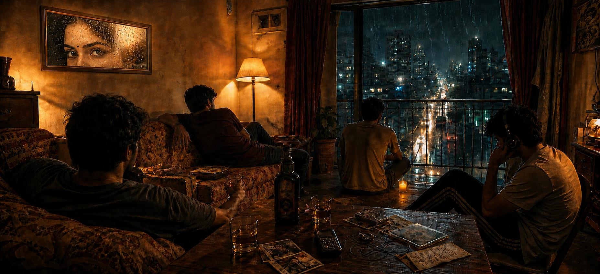

आख्खा बॉलीवुड
एक तरफ
इमरान हाशमी एक तरफ
For the nights that begin with a song
and end somewhere in the past.

after hours / 00:47
For the nights that begin with a song
and end somewhere in the past.
